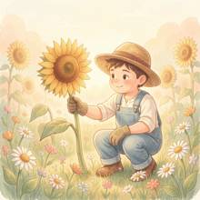
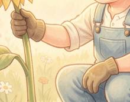

Action — Please draw a picture: a young gardener is squatting among the flowers
Please draw a picture: a young gardener is squatting among the flowers, gently holding up a sunflower that is about to fall with his gloved hand. The picture is in a warm and healing picture book style.

Judge — Direct
- FAILAction - Hand (Character/Anthropomorphic) — The character wears brown gloves on both hands. His right hand is shown touching a leaf on the sunflower's stem. The hand is not depicted holding up the sunflower itself, and the sunflower is upright, not appearing to fall.
- PASSRelationship - Composition — The central figure of a young gardener is surrounded by numerous flowers of various colors and types, such as daisies, which are in front of, next to, and behind him.
- PASSAction - Full-body (Character/Anthropomorphic) — The character is shown in a full-body squatting position, with both knees bent and his body lowered to the ground, supported by his feet.
- PASSStyle — The image is rendered with a soft, warm color palette, including yellows, greens, and browns. The style features gentle line work and a watercolor-like texture, with a cute character design, which is characteristic of a warm picture book illustration.
Judge — Continuum
- PASSAction - Hand (Character/Anthropomorphic) — A young boy is shown wearing gloves on both hands. His left gloved hand is holding the stem of a large sunflower.
- PASSRelationship - Composition — The central figure, a young boy, is positioned in a field surrounded by numerous flowers, including daisies, other small colorful flowers, and sunflowers in the background and foreground.
- PASSAction - Full-body (Character/Anthropomorphic) — The young boy is depicted in a full-body view, positioned in a squatting pose with his knees bent and his body low to the ground.
- PASSStyle — The image is rendered in a soft, watercolor-like style with a warm color palette, featuring yellows, oranges, and soft earth tones. The character has a gentle, cute design, and the overall composition feels calm, aligning with a picture book aesthetic.
What the agent did
Thinking
Let's generate an image of a young gardener crouching in a flower garden, gently holding up a sunflower that is about to fall, wearing a work glove. The style should be a warm, healing picture-book style.
Step 1 — `generate_image`
{
"prompt": "Warm healing picture book illustration, soft watercolor and crayon texture, gentle pastel colors with golden afternoon light. A young boy gardener in overalls and a straw hat squats among a lush field of wildflowers and sunflowers, tenderly cupping a sunflower that is leaning and about to fall with his gloved hand, supporting its drooping stem. The sunflower's head tilts gently toward him. Other sunflowers and daisies sway softly around them, blurred dreamy background, warm cream and soft orange palette, cozy storybook atmosphere, soft rounded shapes, delicate hand-drawn lines, tender and heartwarming mood.",
"model": "flux2-klein"
}Result img_0

Thinking
The image is very good. Let's check: - Young gardener crouching among the flowers ✓ - Gently holding up a sunflower with his gloved hand ✓ (gloved hand gripping the stem, sunflower tilted and drooping) - Warm, healing picture-book style ✓ The sunflower is indeed tilted to one side, being held by his gloved hand, which fits the "about to fall" description. The style is soft, warm, and picture-book-like. Small nitpick: the sunflower appears to be supported from below, and it looks fine. It might be good to check the details with inspect_region, but honestly this looks like it satisfies the requirements. Let me check the gloved hand and the sunflower in a bit more detail. Actually, the image looks good and meets all the requirements. The sunflower is tilted (about to fall), and the boy is holding it up with his gloved hand while crouching. The style is warm and healing, like a picture book. I'll mark it as the best and stop. It would probably be good to check once in a close-up to see if there are any artifacts on the hand.
Step 2 — `inspect_region`
{
"image": "img_0",
"roi": "the gloved hand holding the sunflower stem",
"padding": 0.1
}Result img_1

Thinking
On close inspection, the gloved hand is holding the sunflower's stem cleanly and naturally. Both hands are wearing work gloves, and the fingers are depicted correctly. There are no serious artifacts. The image satisfies all the requirements: - A young gardener crouching in the middle of flowers ✓ - Gently holding up a sunflower that's about to fall over, with a gloved hand ✓ - A warm, healing picture-book style ✓ This is a good result. I'll mark this as the best and stop.
Model
On close inspection, the gloved hand is cleanly gripping the drooping stem, and there are no artifacts or unnatural elements. All the necessary elements are present: a young gardener crouching in a field of flowers, gently supporting a sunflower that's tilting and about to fall over, with his gloved hand, all rendered in a soft, warm picture-book style.
Step 3 — `mark_best`
{
"image": "img_0",
"reason": "Fully matches the prompt: young gardener squatting in flowers, gloved hand gently holding up a leaning sunflower, warm healing picture book style. Hand and stem verified clean on close-up."
}Thinking
Done. The image is marked as the best. Now I'll tell the user.
Model
Here's your picture! 🌻 A young gardener in overalls and a straw hat squats in a field of sunflowers and daisies, gently holding up a leaning sunflower that's about to fall with his gloved hand. The image is rendered in a soft, warm picture book style with delicate hand-drawn lines, a cozy cream-and-golden palette, and a dreamy, healing atmosphere — like a page from a children's story about kindness and care. I verified the gloved hand on close inspection (clean fingers, natural grip on the stem) and marked this as the final result. Let me know if you'd like any adjustments — a different pose, time of day, or style tweak!